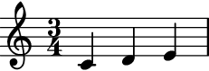
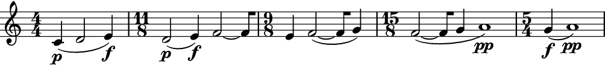

auxjad.LeafLooper¶
-
class
auxjad.LeafLooper(contents: abjad.core.Container.Container, *, window_size: int, step_size: int = 1, max_steps: int = 1, repetition_chance: float = 0.0, forward_bias: float = 1.0, head_position: int = 0, omit_time_signatures: bool = False, processs_on_first_call: bool = False)¶ LeafLooperoutputs slices of anabjad.Containerusing the metaphor of a looping window of a constant number of elements. This number is given by the argumentwindow_size, which is anintrepresenting how many notes are to be included in each slice. The duration of the slice will be the sum of the duration of these notes.For instance, if the initial container had the logical ties
[A, B, C, D, E, F](where each letter represents one logical tie) and the looping window was size3, the output would be:A B C B C D C D E D E F E F FThis can be better visualised as:
A B C B C D C D E D E F E F F- Example:
Calling the object will return an
abjad.Selectiongenerated by the looping process. It takes a container (or child class equivalent) and the number of elements of the window as arguments. Each call of the object will move the window forwards and output the result.>>> container = abjad.Container(r"c'4 d'2 e'4 f'2 ~ f'8 g'1") >>> looper = auxjad.LeafLooper(container, ... window_size=3, ... ) >>> notes = looper() >>> staff = abjad.Staff(notes) >>> abjad.f(staff) \new Staff { \time 4/4 c'4 d'2 e'4 }
>>> notes = looper() >>> staff = abjad.Staff(notes) >>> abjad.f(staff) \new Staff { \time 11/8 d'2 e'4 f'2 ~ f'8 }

The property
current_windowcan be used to access the current window without moving the head forwards.>>> notes = looper.current_window >>> staff = abjad.Staff(notes) >>> abjad.f(staff) \new Staff { \time 11/8 d'2 e'4 f'2 ~ f'8 }

- Example:
The very first call will output the input container without processing it. To disable this behaviour and have the looping window move on the very first call, initialise the class with the keyword argument
processs_on_first_callset toTrue.>>> container = abjad.Container(r"c'4 d'2 e'4 f'2 ~ f'8 g'1") >>> looper = auxjad.LeafLooper(container, ... window_size=3, ... processs_on_first_call=True, ... ) >>> notes = looper() >>> staff = abjad.Staff(notes) >>> abjad.f(staff) \new Staff { \time 11/8 d'2 e'4 f'2 ~ f'8 }

- Example:
The instances of
LeafLoopercan also be used as an iterator, which can then be used in a for loop to exhaust all windows. Note that unlike the methodsoutput_n()andoutput_all(), time signatures are added to each window returned by the shuffler. Use the functionauxjad.remove_repeated_time_signatures()to clean the output when usingLeafLooperin this way.>>> container = abjad.Container(r"c'4 d'2 e'8 f'2") >>> looper = auxjad.LeafLooper(container, ... window_size=2, ... ) >>> staff = abjad.Staff() >>> for window in looper: ... staff.append(window) >>> auxjad.remove_repeated_time_signatures(staff) >>> abjad.f(staff) \new Staff { \time 3/4 c'4 d'2 \time 5/8 d'2 e'8 e'8 f'2 \time 2/4 f'2 }
- Example:
This class can take many optional keyword arguments during its creation.
step_sizedictates the size of each individual step in number of elements (default value is1).max_stepssets the maximum number of steps that the window can advance when the object is called, ranging between1and the input value (default is also1).repetition_chancesets the chance of a window result repeating itself (that is, the window not moving forwards when called). It should range from0.0to1.0(default0.0, i.e. no repetition).forward_biassets the chance of the window moving forward instead of backwards. It should range from0.0to1.0(default1.0, which means the window can only move forwards. A value of0.5gives 50% chance of moving forwards while a value of0.0will move the window only backwards). Lastly,head_positioncan be used to offset the starting position of the looping window. It must be an integer and its default value is0.>>> container = abjad.Container(r"c'4 d'2 e'4 f'2 ~ f'8 g'1") >>> looper = auxjad.LeafLooper(container, ... window_size=3, ... step_size=1, ... max_steps=2, ... repetition_chance=0.25, ... forward_bias=0.2, ... head_position=0, ... omit_time_signatures=False, ... processs_on_first_call=True, ... ) >>> looper.window_size 3 >>> looper.step_size 1 >>> looper.repetition_chance 0.25 >>> looper.forward_bias 0.2 >>> looper.max_steps 2 >>> looper.head_position 0 >>> looper.omit_time_signatures False >>> looper.processs_on_first_call True
Use the properties below to change these values after initialisation.
>>> looper.window_size = 2 >>> looper.step_size = 2 >>> looper.max_steps = 3 >>> looper.repetition_chance = 0.1 >>> looper.forward_bias = 0.8 >>> looper.head_position = 2 >>> looper.omit_time_signatures = True >>> looper.processs_on_first_call = False >>> looper.window_size 2 >>> looper.step_size 2 >>> looper.max_steps 3 >>> looper.repetition_chance 0.1 >>> looper.forward_bias 0.8 >>> looper.head_position 2 >>> looper.omit_time_signatures True >>> looper.processs_on_first_call False
- Example:
Set
forward_biasto0.0to move backwards instead of forwards (default is1.0). The initialhead_positionmust be greater than0otherwise the contents will already be exhausted in the very first call (since it will not be able to move backwards from that position).>>> container = abjad.Container(r"c'4 d'4 e'4 f'4") >>> looper = auxjad.LeafLooper(container, ... window_size=2, ... head_position=2, ... forward_bias=0.0, ... ) >>> notes = looper.output_all() >>> staff = abjad.Staff(notes) >>> abjad.f(staff) \new Staff { \time 2/4 e'4 f'4 d'4 e'4 c'4 d'4 }
- Example:
Setingt
forward_biasto a value in between0.0and1.0will result in random steps being taken forward or backward, according to the bias. The initial value ofhead_positionwill once gain play an important role here, as the contents might be exhausted if the looper attempts to move backwards after reaching the head position0.>>> container = abjad.Container(r"c'4 d'4 e'4 f'4 g'4 a'4 b'4 c''4") >>> looper = auxjad.LeafLooper(container, ... window_size=3, ... head_position=3, ... forward_bias=0.5, ... ) >>> notes = looper.output_n(5) >>> staff = abjad.Staff(notes) >>> abjad.f(staff) \new Staff { \time 3/4 f'4 g'4 a'4 e'4 f'4 g'4 f'4 g'4 a'4 e'4 f'4 g'4 d'4 e'4 f'4 }
- Example:
Setting the keyword argument
max_stepsto a value larger than1will result in a random number of steps (between1andmax_steps) being applied at each call.>>> container = abjad.Container( ... r"c'4 d'4 e'4 f'4 g'4 a'4 b'4 c''4 d''4 e''4") >>> looper = auxjad.LeafLooper(container, ... window_size=2, ... max_steps=4, ... ) >>> notes = looper.output_n(4) >>> staff = abjad.Staff(notes) >>> abjad.f(staff) \new Staff { \time 2/4 c'4 d'4 g'4 a'4 a'4 b'4 c''4 d''4 }
- Example:
To disable time signatures altogether, initialise
LeafLooperwith the keyword argumentomit_time_signaturesset toTrue(default isFalse), or use theomit_time_signaturesproperty after initialisation.>>> container = abjad.Container(r"c'4 d'2 e'4 f'2 ~ f'8 g'1") >>> looper = auxjad.LeafLooper(container, ... window_size=3, ... omit_time_signatures=True, ... ) >>> notes = looper() >>> staff = abjad.Staff(notes) >>> abjad.f(staff) \new Staff { c'4 d'2 e'4 }
Tip
All methods that return an
abjad.Selectionwill add an initial time signature to it. Theoutput_n()andoutput_all()methods automatically remove repeated time signatures. When joining selections output by multiple method calls, useauxjad.remove_repeated_time_signatures()on the whole container after fusing the selections to remove any unecessary time signature changes.- Example:
The function
len()can be used to get the total number of elements in the contents.>>> container = abjad.Container(r"c'4 d'2 e'4 f'2 ~ f'8 g'1") >>> looper = auxjad.LeafLooper(container, ... window_size=3, ... ) >>> len(looper) 5
- Example:
To run through the whole process and output it as a single container, from the initial head position until the process outputs the single last element, use the method
output_all().>>> container = abjad.Container(r"c'4 d'4 e'4 f'4") >>> looper = auxjad.LeafLooper(container, ... window_size=2, ... ) >>> window = looper.output_all() >>> staff = abjad.Staff(window) >>> abjad.f(staff) \new Staff { \time 2/4 c'4 d'4 \time 2/4 d'4 e'4 \time 2/4 e'4 f'4 \time 1/4 f'4 }
- Example:
When using
output_all(), set the keyword argumenttie_identical_pitchestoTruein order to tie identical notes or chords at the end and beginning of consecutive windows.>>> container = abjad.Container( ... r"c'4 d'2 r8 d'4 <e' g'>8 r4 f'2. <e' g'>16") >>> looper = auxjad.LeafLooper(container, ... window_size=4, ... ) >>> notes = looper.output_all(tie_identical_pitches=True) >>> staff = abjad.Staff(notes) >>> abjad.f(staff) \new Staff { \time 9/8 c'4 d'2 r8 d'4 ~ \time 4/4 d'2 r8 d'4 <e' g'>8 \time 3/4 r8 d'4 <e' g'>8 r4 \time 11/8 d'4 <e' g'>8 r4 f'2. \time 19/16 <e' g'>8 r4 f'2. <e' g'>16 \time 17/16 r4 f'2. <e' g'>16 \time 13/16 f'2. <e' g'>16 ~ \time 1/16 <e' g'>16 }
- Example:
To run through just part of the process and output it as a single container, starting from the initial head position, use the method
output_n()and pass the number of iterations as argument. Similarly tooutput_all(), the keyword argumenttie_identical_pitchesis available for tying pitches.>>> container = abjad.Container(r"c'4 d'4 e'4 f'4") >>> looper = auxjad.LeafLooper(container, ... window_size=2, ... ) >>> window = looper.output_n(2) >>> staff = abjad.Staff(window) >>> abjad.f(staff) \new Staff { \time 2/4 c'4 d'4 \time 2/4 d'4 e'4 }

- Example:
To change the size of the looping window after instantiation, use the property
window_size. In the example below, the initial window is of size 3, and so the first call of the looper object outputs the first, second, and third leaves. The window size is then set to 4, and the looper is called again, moving to the leaf in the next position, thus outputting the second, third, fourth, and fifth leaves.>>> container = abjad.Container(r"c'4 d'2 e'4 f'2 ~ f'8 g'1") >>> looper = auxjad.LeafLooper(container, ... window_size=3, ... ) >>> notes = looper() >>> staff = abjad.Staff(notes) >>> abjad.f(staff) \new Staff { \time 4/4 c'4 d'2 e'4 }

>>> looper.window_size = 4 >>> notes = looper() >>> staff = abjad.Staff(notes) >>> abjad.f(staff) \new Staff { \time 19/8 d'2 e'4 f'2 ~ f'8 g'1 }

- Example:
Use the
contentsproperty to read as well as overwrite the contents of the looper. Notice that thehead_positionwill remain on its previous value and must be reset to0if that’s required.>>> container = abjad.Container(r"c'4 d'4 e'4 f'4 g'4 a'4") >>> looper = auxjad.LeafLooper(container, >>> window_size=3, >>> ) >>> notes = looper() >>> staff = abjad.Staff(notes) >>> abjad.f(staff) \new Staff { \time 3/4 c'4 d'4 e'4 }
>>> notes = looper() >>> staff = abjad.Staff(notes) >>> abjad.f(staff) \new Staff { \time 3/4 d'4 e'4 f'4 }
>>> looper.contents = abjad.Container( ... r"cs'''4 ds'''4 es'''4 fs'''4") >>> notes = looper() >>> staff = abjad.Staff(notes) >>> abjad.f(staff) \new Staff { \time 3/4 ds'''4 es'''4 fs'''4 }
>>> looper.head_position = 0 >>> notes = looper() >>> staff = abjad.Staff(notes) >>> abjad.f(staff) \new Staff { \time 3/4 cs'''4 ds'''4 es'''4 }
Warning
This class can handle tuplets, but the engraving of the output is not ideal and so this functionality should be considered experimental. Time signatures will be correct when dealing with partial tuplets (thus having non-standard values in their denominators), but each individual note of a tuplet will have the ratio printed above them and there won’t be a bracket spanning all notes.
>>> container = abjad.Container(r"c'4 d'8 \times 2/3 {a4 g2}") >>> looper = auxjad.LeafLooper(container, ... window_size=2, ... ) >>> window = looper.output_all() >>> staff = abjad.Staff(window) >>> abjad.f(staff) \new Staff { \time 3/8 c'4 d'8 #(ly:expect-warning "strange time signature found") \time 7/24 d'8 \tweak edge-height #'(0.7 . 0) \times 2/3 { a4 } \tweak edge-height #'(0.7 . 0) \times 2/3 { \time 2/4 a4 } \tweak edge-height #'(0.7 . 0) \times 2/3 { g2 } \tweak edge-height #'(0.7 . 0) \times 2/3 { #(ly:expect-warning "strange time signature found") \time 2/6 g2 } }
Tip
The functions
auxjad.remove_repeated_dynamics()andauxjad.reposition_clefs()can be used to clean the output and remove repeated dynamics and unnecessary clef changes.Warning
Do note that elements that span multiple notes (such as hairpins, ottava indicators, manual beams, etc.) can become problematic when notes containing them are split into two. As a rule of thumb, it is always better to attach those to the music after the looping process has ended.
Methods
__init__(contents, *, window_size[, …])Initialises self.
output_all(*[, tie_identical_pitches])Goes through the whole looping process and outputs a single
abjad.Selection.output_n(n, *[, tie_identical_pitches])Goes through
niterations of the looping process and outputs a singleabjad.Selection.Attributes
contentsThe
abjad.Containerto be sliced and looped.current_windowRead-only property, returns the window at the current head position.
forward_biasThe chance of the window moving forward instead of backwards.
head_positionThe position of the head at the start of a looping window.
max_stepsThe maximum number of steps per operation.
omit_time_signaturesWhen
True, the output will contain no time signatures.processs_on_first_callIf
Truethen thecontentswill be processed in the very first call.repetition_chanceThe chance of the head not moving, thus repeating the output.
step_sizeThe size of each step when moving the head.
window_sizeThe length of the looping window.